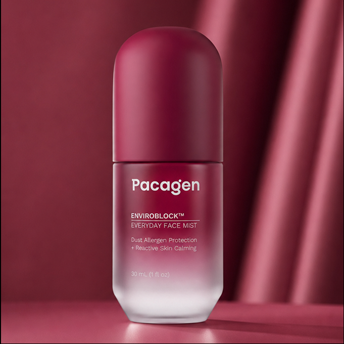
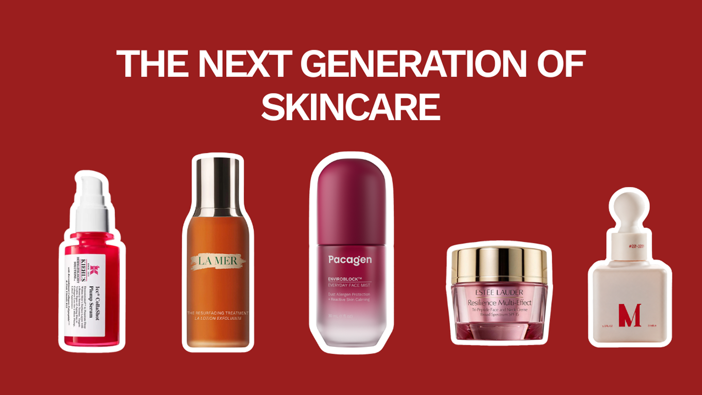
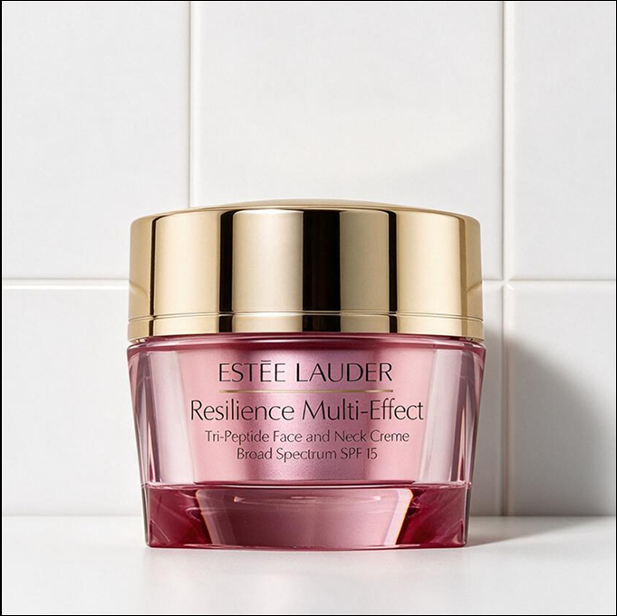
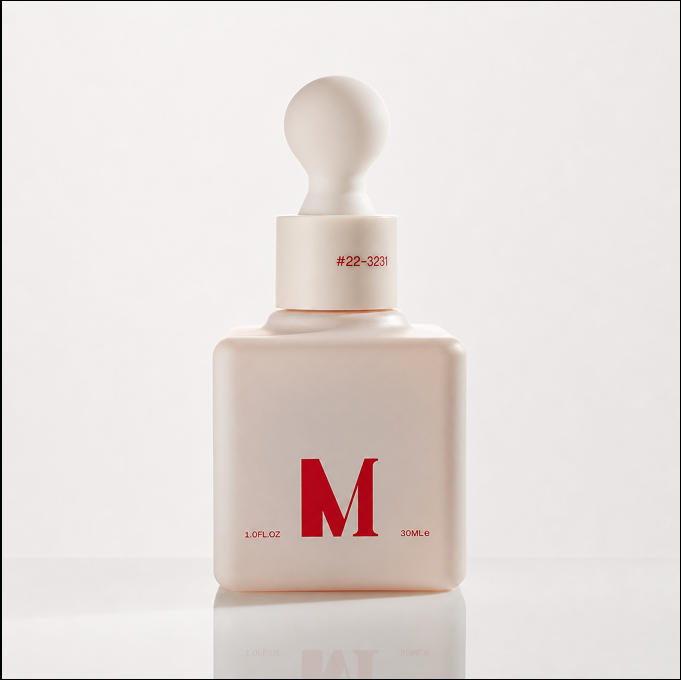
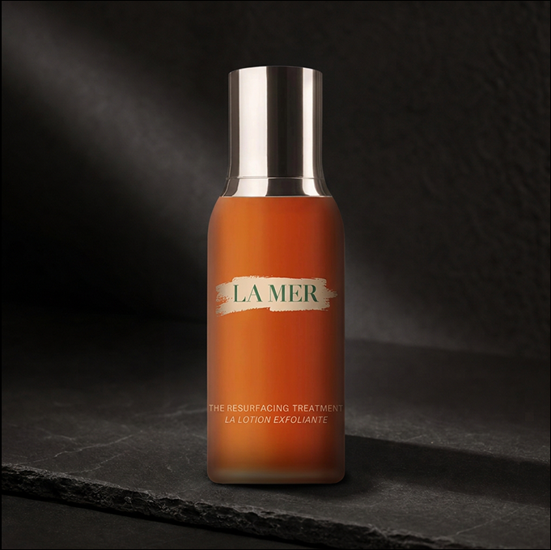
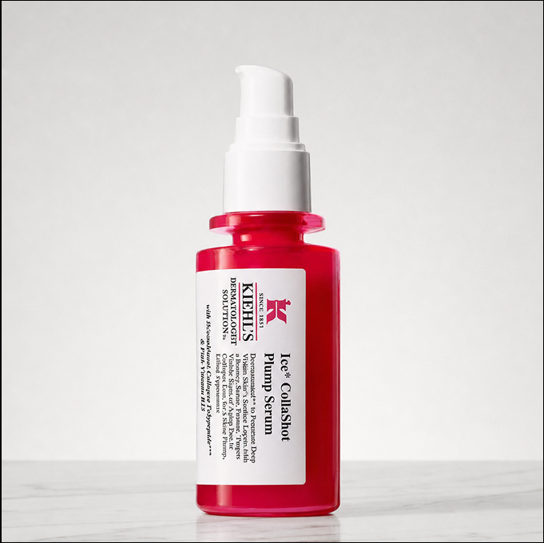

Best for Reimagining Skincare
Editor’s Pick 🏆
Pacagen’s EnviroBlock™ Everyday Face Mist
$88

The next generation of skincare isn’t just about better ingredients — it’s about entirely new ways of approaching skin.

Skin resilience is becoming one of the most interesting frontiers in modern skincare — because healthy-looking skin isn’t just about treating problems after they appear, but helping skin better withstand and recover from everyday stressors.
PDRN, polydeoxyribonucleotide, is one of modern skincare’s biggest buzzwords. But there’s an overlooked issue: injectable PDRN isn’t equivalent to topical PDRN — how much topical PDRN actually reaches its intended target? That doesn’t make PDRN useless — it means “PDRN” alone shouldn’t make a product seem revolutionary. PDRN is only one example of a broader shift toward finding new ways to help skin repair, recover, and stay resilient. We looked at five of the most interesting skincare innovations to see which are actually pushing the industry forward.
Our biotech research team evaluated each skincare using four key criteria:
$88

You can have a carefully curated skincare routine and still deal with redness, sensitivity, or skin that doesn’t feel calm. Because skin resilience isn’t just about what you put on your skin — it’s also about what your skin encounters every day. Environmental stressors and irritants can add to that burden. What if skincare could proactively address some of what your skin encounters?
EnviroBlock™ is an engineered protein technology that targets two major key dust-mite allergens: Der p 1 and Der p 2. Der p 1 disrupts tight junctions between epithelial cells, which usually maintain the skin barrier and Der p 2 amplifies inflammatory immune activity.
When EnviroBlock™ contacts dust-mite allergens, it binds and neutralizes them, reducing active allergen exposure around the skin.
Most skincare is designed around what you put on your skin. EnviroBlock™ takes a different approach by targeting what your skin encounters. By addressing environmental stressors, it’s not trying to be the next retinol or PDRN, it’s introducing a new way to think about supporting skin resilience.
$120

Estée Lauder’s Resilience formula uses an advanced Tri-Peptide Complex designed to support skin’s firmness, elasticity, and ability to maintain a resilient appearance over time.
Skin resilience depends partly on how well skin maintains its structure and recovers from everyday stress. The formula uses peptides alongside antioxidant and protective technologies to support firmness while helping defend against environmental stressors that can contribute to visible signs of skin aging.
It represents a shift from simply treating visible signs of aging towards helping skin stay stronger and more resilient over time — supporting the systems that help skin maintain its structure as it faces daily stress.
Peptides can support important aspects of skin structure, but resilience isn’t determined by firmness alone. Barrier function, hydration, environmental exposure, and the skin’s natural repair processes all play a role. So a peptide-focused approach addresses one piece of what makes skin resilient.
$200

Using bioactive growth factors — signaling proteins that help regulate skin repair and renewal, skincare can take a direct approach to skin resilience through the ability to recover from stress.
Growth factors act like messengers between cells, binding to specific receptors on the cell surface and activating signalling pathways involved in processes such as cell growth, repair, and tissue remodelling. In skincare, the idea is to use these signals to support the skin’s natural recovery processes, rather than simply treating the visible aftermath of stress.
This represents a shift toward biologically active skincare: instead of only supplying ingredients that sit on or condition the skin, the goal is to influence the signalling involved in how skin repairs and renews itself.
Growth factors are fragile, biologically active proteins, which makes stability throughout a product’s shelf life difficult. Furthermore with topical application, there’s another challenge: how much of the growth factors remain active, how effectively they are delivered through the skin, and whether they can reach the cells they’re intended to signal. The science behind the ingredient matters, but so does how that science is translated into a topical product.
$160

Fermentation in skincare transforms familiar ingredients to a different mix of compounds.
La Mer’s formula combines glycolic acid and gluconolactone with their Marine Enzyme Ferment and Resurfacing Spheres. The resulting bioactive compounds acids, peptides, enzymes, and other metabolites, support the skin’s natural moisturizing factors, defend against oxidative stress, and encourage controlled exfoliation and surface renewal.
Here, fermentation becomes part of the technology itself — not simply adding another ingredient, but using a biological process to modify and refine the ingredients in the formula.
Fermentation can change the composition of familiar ingredients, but the process itself doesn’t guarantee a more advanced or effective formula. What it produces depends heavily on the starting ingredients, microorganisms, and fermentation conditions — meaning the technology isn’t inherently novel from one product to another.
“Fermented” on a label can’t tell you much on its own.
$78

Kiehl’s 1cc™ CollaShot Plumping Serum takes a collagen-focused approach to skin resilience.
Collagen is one of the key proteins that gives skin its strength, structure, and elasticity. The formula uses biosynthetic collagen fragments designed to resemble components of human collagen, taking a more targeted approach to supporting the appearance of plumper, firmer skin.
Rather than simply adding moisture to temporarily plump the skin, the technology focuses on the structural proteins associated with skin strength and elasticity — connecting collagen support to one of the foundations of resilient-looking skin.
Collagen is a large structural protein, and topically applied collagen doesn’t simply replace the collagen naturally found in skin. The real question is what smaller collagen-derived peptides can do once applied — and how effectively the formula can translate collagen-focused technology into a meaningful skin benefit.
Across these five technologies, one thing becomes clear: skin resilience is about more than simply looking healthy — it’s about how well skin can withstand everyday stress, recover from damage, and maintain its strength over time. The most promising innovations aren’t necessarily the ones with the biggest buzz. They’re the ones finding new ways to strengthen, protect, repair, or support the skin’s natural resilience — whether that’s addressing environmental stressors, supporting its structural framework, or helping it recover and renew.
The future of skincare isn’t just about making skin look better today. It’s about helping skin stay resilient tomorrow.